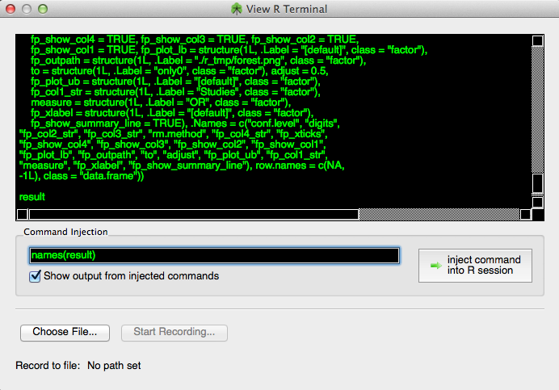

OpenMEE relies on R to perform its analyses. The casual user need not ever be aware of this in the course of his analyses. However, If desired you can see the commands being sent to R in real-time and even interact with the R console. You can also log the R commands to a text file. All this can be done by selecting 'R output viewer' in from the 'Through the looking glass menu'. Then, as you interact with program, the commands being sent to R will appear in the window.

Figure 1. R console
You can interact with objects in the R workspace by typing commands in to the 'Command Injection' area of the 'R output viewer' window and then pressing enter or pushing the 'Inject Command' button.